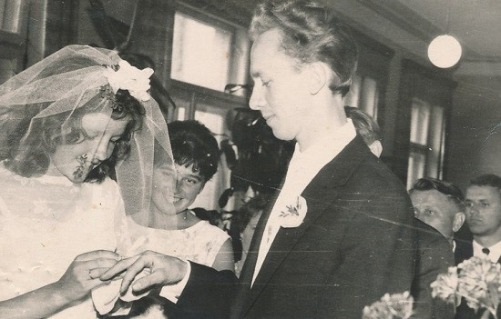
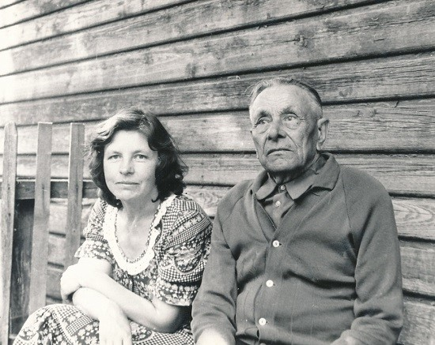

Dar viena iškili mūsų krašto asmenybė, palikusi gilų pėdsaką gimtinėje ir kraštiečių širdyse – profesorė Birutė Baltrušaitytė. Jos vardu pavadinta Tauragės viešoji biblioteka, kurioje medžiagos apie literatę surinkta tiek, kad jos studijoms tektų skirti ne vieną savaitę, o gal ir ne vieną mėnesį. Šįkart trumpai apie tai, ką pavyko rasti Maironio lietuvių literatūros muziejaus interneto svetainėje, o nepamirštamą pirmąjį susitikimą su literate prisiminė Lomių krašto kraštotyrininkė, buvusi lietuvių kalbos mokytoja Elena Bazinienė.
Birutė Baltrušaitytė gimė 1940 m. spalio 24 d. Treinosios kaime, netoli Lomių. Jauniausia iš trijų seserų. Mokėsi Tauragės I vidurinėje mokykloje. Rašė eilėraščius. Publikavo savo kūrybą „Moksleivyje“. Į jį pateko ir Utenos r. Vyžuonų vidurinės mokyklos mokinio Antano Masionio eilėraščiai. Jie patiko Birutei, ji parašė Antanui laišką. Susitiko dvi talentingos asmenybės. Abu studijavo Vilniaus universitete, baigę tris kursus sukūrė šeimą. Birutė studijavo rusų kalbą, o Antanas – lietuvių. Ji visą gyvenimą graužėsi, kad neįstojo į lietuvių kalbą. Baigusi universitetą, buvo palikta Rusų literatūros katedroje. Dirbo laborante, vyriausiąja laborante, dėstytoja. 1965 m. išėjo į dvimetę aspirantūrą. Disertacijos tema – „Levas Tolstojus ir Lietuva“. Apgynė daktaro disertaciją. Nuo laborantės pakilo iki profesorės.
Buvusią dėstytoją šiltai prisimena ir „Tauragės kurjerio“ redaktorė Ramunė Ramanauskienė:
Ji buvo ori, tikra eruditė. Niekada nekeldavo balso, o jos paskaitos buvo kaip teatras. Mūsų kursui rusų literatūrą dėstė pačioje nepriklausomybės pradžioje. Būtent iš jos sužinojome apie Anos Achmatovos, Marinos Cvetajevos, Aleksandro Solženycino kūrybą. Iki šiol ją prisimenu. Studijuodama žinojau, kad Birutė Baltrušaitytė kilusi iš Tauragės krašto, bet taip ir neišdrįsau jai pasakyti, kas mes kraštietės.
Antanas Masionis ir Birutė Baltrušaitytė vestuvių dieną. 1964 m. liepa Profesorė labai mylėjo savo dukras Aistę ir Audronę. 1974 m. palaidojo vyrą Antaną Masionį Vyžuonų kapinėse. Kasmet važiuodavo lankyti jo kapo. Vilkėjo gedulingus drabužius. Miškai sakuoti prie Šventosios vingio, / pakrantės krūmai žiūri vandenin. / Žilvitis, dugną pasirinkęs, links, / o aš tikėjausi gyvent laimingai / tarp šių miškų, kai ryto žarija / viršūnes šildo, bet deja, deja... Kokia laiminga ir švytinti ji buvo 1964-ųjų liepą, tas džiaugsmas truko tik dešimt metų. Tos dienos grožis atsiskleidžia B.Radzevičiaus apsakyme „Begalinis dienos skaidrumas“: Jauni vyrai, atvažiavę iš didesnio miesto nei šis, sustoja ratu ir užtraukia dainą. Rankos ant pečių, galvos atmestos, melodija neša į kitą laiką, į tolybes, nors jie ir pasilieka čia, už žiedlapiais nuberto stalo. Švelnūs vėjo gūsiai plaiksto baltą jaunamartės drabužį, jos veidai įkaitę, akys spindi, kiek virpančiais pirštais ji vis taiso nuometą. Guvi padykėlė, ji ir dabar, rodos, vos laikosi neiškrėtus kokios išdaigos. Pakiliai iškilmingas veidas jaunojo. Rodos, jis nė nepastebi, kaip glaustosi prie jo jaunutė žmona: sieloje skaidrios tolumos...
Vilniaus universitete skaitė paskaitas ne tik rusistams, bet ir lituanistams, žurnalistams ir bibliotekininkams. Jos paskaitos – „XIX a. pirmosios pusės rusų literatūros istorija“, „XIX a. antrosios pusės rusų literatūros istorija“, „Pabaltijo ir rytinių slavų literatūra“, speckursai – „F.Dostojevskio kūrybos savitumas“, „Lietuvių ir rusų literatūrų santykiai“, „Meninio vertimo klausimai“.
B. Baltrušaitytė–Masionienė savo sielvartą pavertė kūryba.
Pirmasis B.Baltrušaitytės eilėraščių rinkinys „Žolynų prieglaudoj“ pasirodė 1980 m. Vėliau išleistos kitos knygos: „Upių pradžioj“, „Šuliniai“, „Lietuvininkų ir prūsų žemėj“, „Po pietvakarių dangum“, apysakų ir apsakymų rinkinys „Lieptai“, apysakų knyga „Sugrįžimai“, „Po Žalgirio kautynių“. Išleido knygas „Dabartinės estų prozos bruožai“, „Levas Tolstojus ir Lietuva“, „Literatūrinių ryšių pėdsakais“, „Iš Kalevo šalies“, „Su savąja tauta“. Paskutinioji B.Baltrušaitytės-Masionienės parašyta knyga – „Mažosios Lietuvos moterys“. Išmokusi estų, ukrainiečių, čekų, slovakų kalbas, B.Baltrušaitytė daug vertė. Jos išversti B.Alvero, I.Arinio, D.Čeredničenkos, J.Kaplinskio, L.Kostenko, J.Bėgelio, P.Rumo, V.Stuso, G.Suitso, M.Vinogranovskio, A.Vyrlaido ir kitų rašytojų poezijos ir prozos kūriniai.
1996 m. rugpjūčio 2 d. rašytoja, literatūros tyrinėtoja, habilituota humanitarinių mokslų daktarė B.Baltrušaitytė-Masionienė mirė.
Taip pirmąjį susitikimą su B.Baltrušaityte apibūdina Lomių krašto kraštotyrininkė Elena Bazinienė.
Gimtąsias vietas kraštietė Birutė Baltrušaitytė-Masionienė lankydavo vasaromis, kai atostogų metu apsistodavo Tauragėje pas artimuosius. Paskutinį kartą Lomiuose ji lankėsi 1994 metų vasarą, kai mūsų kaime dirbo gausus Vilniaus universiteto studentų ir mokslininkų būrys, vadintas kompleksine-kraštotyrine ekspedicija „Ramuva“. Teko su rašytoja susitikti, bendrauti. Šis neišdildomas susitikimas iki šiol išliko atmintyje, – prisimena E.Bazinienė.
Tai buvo šventinis sekmadienis, bažnyčioje vyko tituliniai Kristaus atsimainymo atlaidai.
Kartu su tuomete Lomių mokyklos direktoriaus pavaduotoja Virginija Valinčiene pasitikome viešnią. Pirmos susitikimo minutės jaudino – juk sutinkame VU profesorę, rašytoją – neeilinę asmenybę! Tačiau kraštietė pasirodė nuoširdi, kukli. Paprastas, lietuviškas tautinių motyvų klostuotas sijonas, lengva palaidinukė, kuklūs ir kartu skoningi kaklo papuošalai. Kiek pabendravusios, iš rašytojos žvilgsnio pajautėme, kad ji atvykusi į tėviškę pirmiausia pageidauja aplankyti kaimo kapinėse protėvių kapus, dalyvauti atlaidų apeigose. Dar vėliau paaiškėjo, kad vienas iš daugelio tėviškės lankymo tikslų buvo ir interesas pažvelgti į bažnyčioje saugotas krikšto knygas, jose surasti įrašą apie save, – lomiškės E.Bazinienės atmintyje vis dar gyvi pirmojo susitikimo prisiminimai. – Po atlaidų su profesore susitikome direktoriaus pavaduotojos namuose prie pietų stalo. Kraštietė buvo labai atidi, klausėsi ir klausė mūsų, kuo gyvena jos gimtieji Lomiai, kokie kaimo ir mokyklos džiaugsmai bei rūpesčiai. Grįžusi į Vilnių, pedagogams skirtame leidinyje „Dialogas“ aprašė tėviškėje patirtus malonius įspūdžius.
Deja, krikšto knygose rašytoja savo pavardės nerado ir dėl to krimtosi. Mat gimė 1940-ųjų spalio 24-ąją. Laikotarpis nusako Lietuvoje vykusius skaudžius pokyčius, sumaištį, o gal tai ir krikštijusio kunigo aplaidumo pasekmė – kas bepasakys.
Po kraštietės vizito užsimezgė bendravimas. 1995 metų žiemą mokyklą pasiekė siunta su rašytojos nauja knyga vaikams „Po Žalgirio kautynių“. Ant kiekvienos knygos autorės autografas su nuoširdžiais linkėjimais jauniesiems tėviškės skaitytojams.
Lomiuose kraštietė nepamiršta. Bendruomenės namų kieme stovi jos atminimui skirtas stogastulpis. Kaimo muziejuje jai skirta ekspozicija. Kasmet spalio 24 dieną renginiais minima iškilios kraštietės gimimo diena.
Birutė su tėvu Stasiu Baltrušaičiu Lomiuose, 1983 m. 